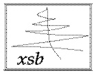

Flora-2 is an advanced object-oriented knowledge representation and reasoning system. It is a dialect of F-logic with numerous extensions, including meta-programming in the style of HiLog, logical updates in the style of Transaction Logic, and defeasible reasoning. Applications include intelligent agents, Semantic Web, knowledge-bases networking, ontology management, integration of information, security policy analysis, and more.
Flora-2 comes with comprehensive manuals and a tutorial, which provide an overview of the theoretical foundations as well as the system. The tutorial includes many examples and exercises.
December ???, 2013: Just in time for the New Year: Version 0.99.5 (Olive Tree). Many exciting enhancements. Details in the release notes.
November 2, 2013: Another couple of months -- another release: Version 0.99.4 (Kumquat). This release features many bug fixes and a number of new features. Details can be found in the release notes.
July 20, 2013: Yet another release, Version 0.99.3 (Aronia). The main feature is a switch to a bundled distribution of both Flora-2 and XSB and a super-simple installation procedure, which does not require a separate XSB download. Also includes various bug fixes and some new functionality.
July 1, 2013: A new release showed up in the wild: Version 0.99.1 (Lotus). Several enhancements, bug fixes, and, notably, simplified installation. As always, details are in the release notes.
May 13, 2013: After more than 5 years of development under the sponsorship of Vulcan Inc., Flora-2 Version 0.99 (Water Lily) has been released! This release includes many enhancements and extensions, including defeasible rules, user-defined functions, delay quantifiers, rule Ids, and more. Details are in the release notes. The license has also changed from LGPL 2.0 to Apache 2.0.
May 11, 2013: The CVS repository is now obsolete and is no longer maintained. From now on, all development will be using the SVN repository at Sourceforge.
|
Powered by
 |